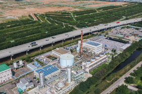

Korea, a country lacking in resources, now generates energy from waste. SLC's Waste-to-Energy Town reuses wastes as resources and energy, creating sustainable future values.
Resource-circulating Waste Disposal System
50MW Power Plant

The 50 MW power plant is the largest one in the world in terms of the amount of generated power and captured landfill gas. The eco-friendly power station uses methane (representing 50% of the landfill gas), which is the main contributor to global warming, as its fuel to generate electricity. The UNFCCC recognizes this business as a Clean Development Mechanism (CDM) for its successful greenhouse gas reductions through fossil fuel substitution and landfill gas combustion. It enabled the SLC to receive carbon credits, etc., thereby actively joining the global response to global warming.